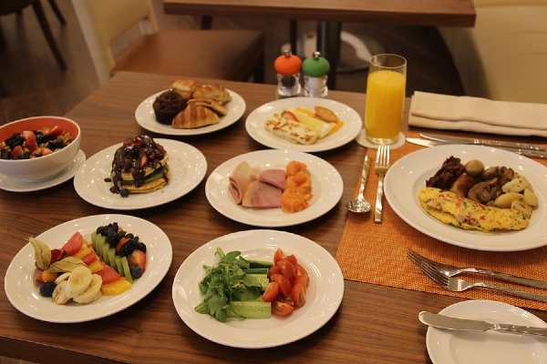
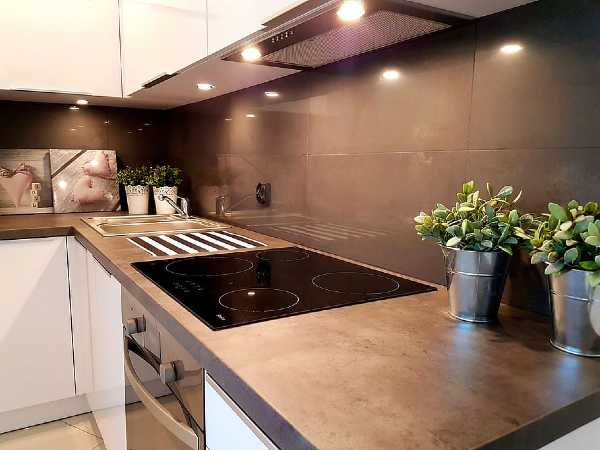

Free Amenities
Breakfast
Exercise/workout room
Indoor Pool
WIFI high-speed internet connection access and smart TVs
Parking
Temple Shuttle
Family history consulation and fmaily ordinance card service

Special Services
Free access to changing rooms and bathroom
facilities for temple patrons who have traveled far and need to change to and from church clothes
A playroom and low-cost, short-term babysitting services for the children of patrons
Long-term stay accommodations in kitchenette suites for full-time temple missionaries
Temple history themed reception and sitting area
A wedding reception hall that can be easily customized with a simple
catering menu and kitchen access for food preparation and serving
A family search center that supports family search and ordinance work
Dry cleaning services
Video game room

Recption & Full-Time Temple Mission Options